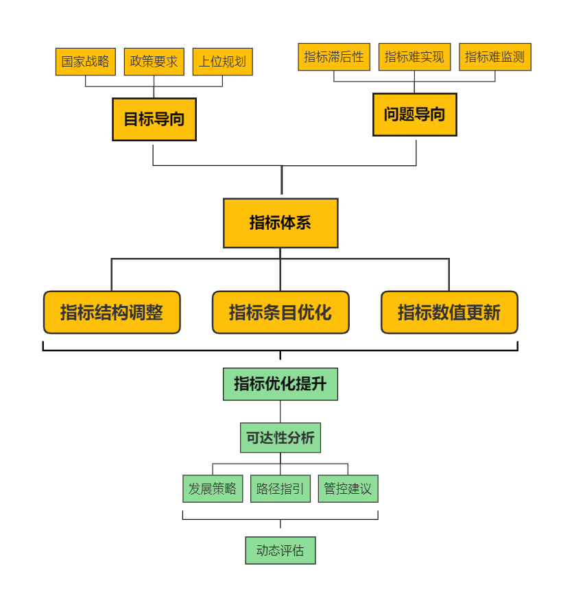

指标管理体系趋善化的计划阶段
计划阶段的主要内容是对指标体系的规划和设计阶段，以目标导向和问题导向为指引对指标体系进行构建。
目标导向是落实新的发展形势下国家政策法规和相关规划对生态城市发展提出的新要求，同时满足各类示范区评价与考核的要求。
问题导向是对上版指标体系及其实施情况进行梳理与评估，分析各类指标存在的问题。
首先，在理清目标和问题的基础上，从实际出发，有针对性地提出适合粤港澳大湾区发展定位和特点的指标体系，给出指标选取、指标解释、目标值设定的来源与依据。其次，对具体指标分析可达性，并提出相应的发展策略、发展方式及管控建议，确保规划目标的实现。最后，对更新优化后的指标体系进行动态评估。
